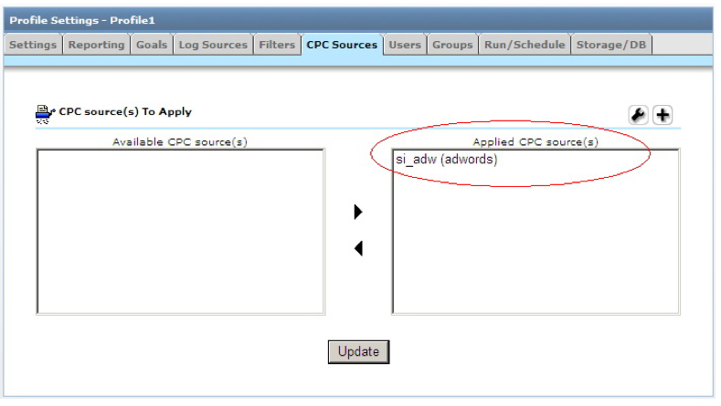

每次点击费用数据导入实用程序 (Urchin 6.5+)
Urchin 6.5 新增了用于处理每次点击费用数据的实用程序。
urchincpc - Urchin 每次点击费用数据导入工具通过 Google AdWords 和 Yahoo! Search Marketing API 来提取每次点击费用数据，以便进一步处理并生成报告。 *请注意：从 AdWords 下载的每次点击费用数据的存档不得超过 250MB (Urchin 6.501+)。
urchincpcd - Urchin 每次点击费用来源调度程序（简称为 CPC 调度程序）用于根据用户指定的时间来安排每次点击费用下载任务（类似于配置文件调度程序）。
CPC 调度程序 (urchincpcd) 可在本地主机上与 Urchin 主调度程序 (urchind) 一起运行。只有在启动并运行主调度程序的情况下，才能安排下载每次点击费用来源。CPC 调度程序会定期检查队列中是否有每次点击费用数据下载任务，并控制这些任务的执行过程。
当发现有任务安排后，每次点击费用导入工具 (urchincpc) 会自动启动。CPC 调度程序会在内部生成工作进程 (worker process)，但您也可以通过命令行直接调用相应进程，以便开始执行队列中的任意现有任务。
下载的每次点击费用数据存储在本地的 /path/to/urchin/data/cpc/ 路径中，并会在系统处理链接的配置文件时由 Urchin 引擎自动提取。
Urchin CPC 调度程序由 urchinctl 实用程序进行管理。要单独对每次点击费用来源调度程序执行操作，请使用“-c”选项。例如：
urchinctl -c start/stop/restart
可单独启动/停止/重启 CPC 调度程序。

要安排立即下载每次点击费用数据，请选中特定每次点击费用来源，并依次访问“配置”->“CPC 来源管理器”->“下载”或“修改”->“调度”标签，然后点击“立即下载”按钮。请注意，只有在启动并运行 CPC 调度程序的情况下才能处理此请求。
用法：CPC 调度程序 - urchincpcd
CPC 调度程序位于 Urchin 6.5+ 安装目录下的 bin 文件夹中。您可以通过命令行使用以下选项：
-d 启用调试模式。详细调试信息记录在输出结果中；在 Windows 系统中，此选项必须与 –console 一起使用，例如：
urchincpcd.exe -console -d
-h 显示帮助信息并退出
* -v 显示版本号并退出 对于 Windows 系统，请使用以下命令之一作为首个参数：
-install 安装 CPC 调度程序 Windows 服务
* -remove 删除 CPC 调度程序 Windows 服务 * -start 启动 CPC 调度程序 Windows 服务 * -stop 停止 CPC 调度程序 Windows 服务 * -console 在控制台模式下启动 CPC 调度程序 用法：每次点击费用导入工具 - urchincpc
您可以通过命令行使用以下选项：
-c [id] 下载指定的费用来源，其中“id”是每次点击费用来源编号
* -d 启用调试模式 * -h 显示帮助信息并退出 * -v 显示版本号并退出 请注意，如果 CPC 调度程序在启动时没有附带任何参数，或者仅附带了 -d 选项，则调度程序就会从队列中的任意现有任务开始处理，并在所有任务处理完毕后退出。
通过代理下载每次点击费用数据 (6.501+)
要启用通过代理下载每次点击费用数据的功能，请修改 urchin.conf 文件，取消对 WebServiceProxyHost、WebServiceProxyPort、WebServiceProxyUsername 和 WebServiceProxyPassword 等条目的注释，并提供所需的值。
###################################################### # CPC Source Manager Settings #... # WebServiceProxyHost, WebServiceProxyHost: Host and port of the HTTP/HTTPS # proxy CPC Source Manager must use to access external CPC sources. # WebServiceProxyUsername, WebServiceProxyPassword: username and password for # proxy that enforces authorization. ###################################################### #WebServiceProxyHost: <proxy host> #WebServiceProxyPort: <proxy port> #WebServiceProxyUsername: <username> #WebServiceProxyPassword: <password>
对于 WebServiceProxyHost，可以输入 IP 地址或完整域名。